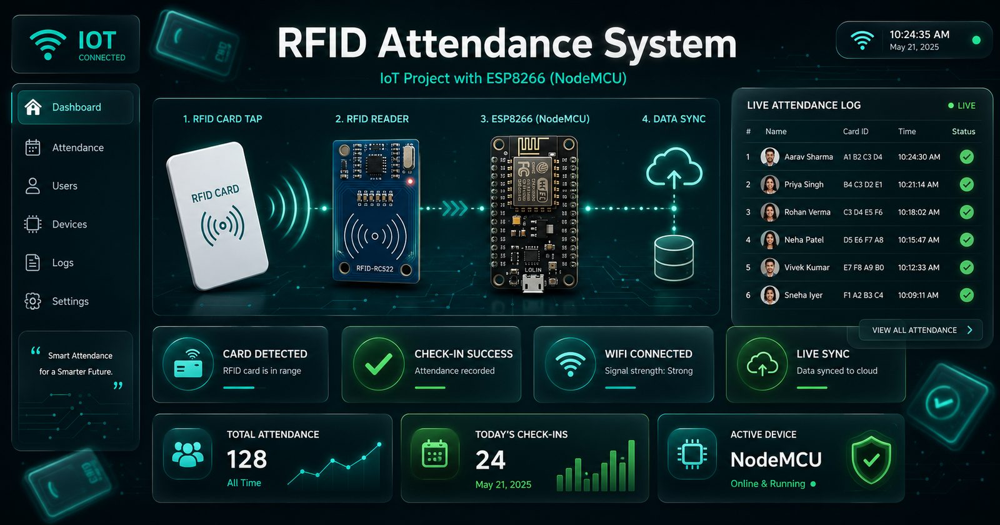

Project documentation — Index 34
RFID Attendance System
Tap a card, mark yourself present: an IoT attendance system where an RFID reader on a NodeMCU ESP8266 syncs presence straight into a web dashboard.

Project documentation — Index 34
Tap a card, mark yourself present: an IoT attendance system where an RFID reader on a NodeMCU ESP8266 syncs presence straight into a web dashboard.

Paper attendance is slow to take, slow to tally, and easy to cheat. This system replaces it: each student taps an RFID card, an RC522 reader on a NodeMCU ESP8266 registers the tap, and the presence record lands in a web database — visible on a dashboard in real time.
Automatic attendance registration via card tap.
NodeMCU ESP8266 syncs records the moment they happen.
Real-time monitoring and reporting of attendance.
MySQL-backed records management.